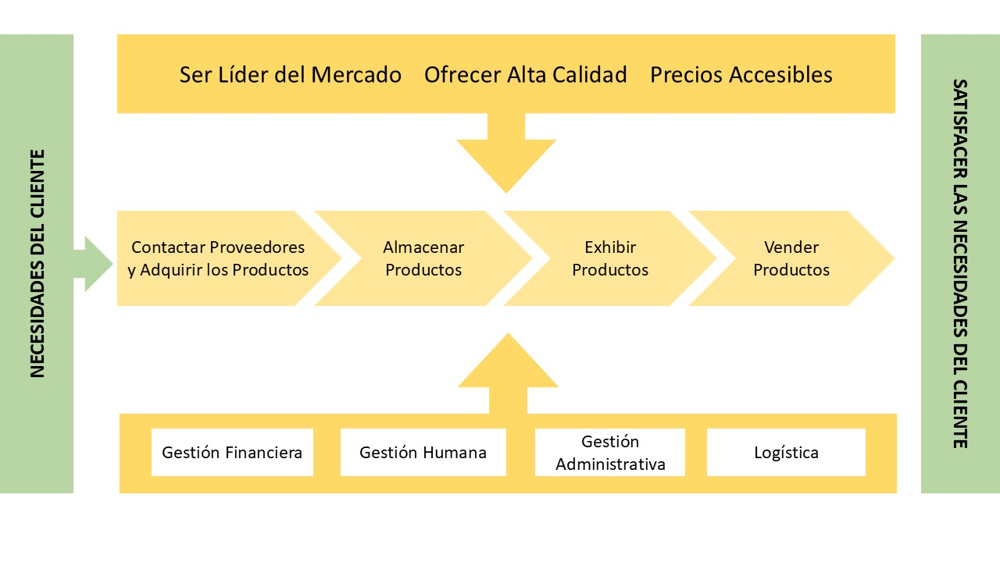
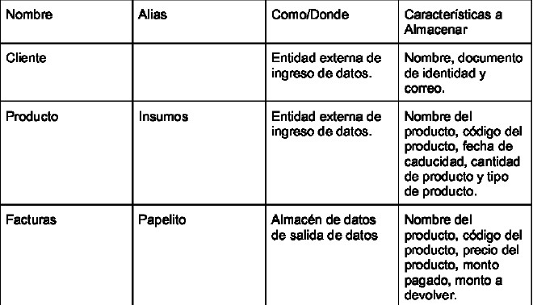

Descripción
Nuestra empresa nació con el objetivo de brindar productos alimenticios de alta calidad a precios accesibles para las familias del barrio. Con el tiempo, nos hemos consolidado como el supermercado líder en la zona, gracias a nuestra variedad de productos esenciales y el compromiso con la satisfacción de nuestros clientes. Hoy en día, seguimos siendo el punto de referencia en el barrio, ofreciendo frescura, calidad y un servicio cercano.
Misión
Mercados Felipe se dedica a ofrecer una amplia gama de productos esenciales para el hogar, priorizando calidad, frescura y precios accesibles. Se enfoca en proporcionar un solo lugar para satisfacer las necesidades diarias, desde alimentos hasta productos de limpieza.
Visión
Para 2025, Mercados Felipe aspira a ser el supermercado líder en productos esenciales para el hogar, destacándose por su calidad, variedad y satisfacción del cliente.
Valores
Vivimos la confianza como pilar fundamental en nuestras relaciones con clientes y colaboradores. Nos impulsa la pasión por lo que hacemos, garantizando un servicio excepcional.
Matriz DOFA

Objetivos
Objetivo General
Consolidar a Mercados Felipe como el supermercado líder de la comunidad, ofreciendo productos de calidad a precios accesibles, y brindando un servicio que se ajuste a las necesidades y expectativas de nuestros clientes.
Objetivos Específicos
- Optimizar la cadena de suministro para ofrecer siempre productos frescos y de calidad.
- Mejorar la experiencia del cliente con atención personalizada y procesos más eficientes.
- Promover prácticas sostenibles que respeten el medio ambiente y las comunidades locales.
- Expandir la oferta de productos para cubrir las nuevas necesidades de los consumidores.
Mapa de Procesos
Diagrama Causa-Efecto

Reglas de Negocio

Diagrama de Procesos Actual

Modelo Verbal
El cliente tiene la escases de algún producto, se dirige al SUPERMERCADO FELIPE, ubica el pasillo donde esta el producto de su interés y lo toma, luego pasa a caja a registrar sus productos brinda la información solicitada y sus productos serán empacados de la manera correcta, le hacen la suma de sus productos y le dan el valor a pagar tiene el derecho a elegir si desea pagar con efectivo o por medio de su tarjeta, luego le registran su pago y por ultimo el cliente terminara recibiendo su factura electrónica en su correo.
Diccionario de datos
Diagrama de Procesos Optimizado